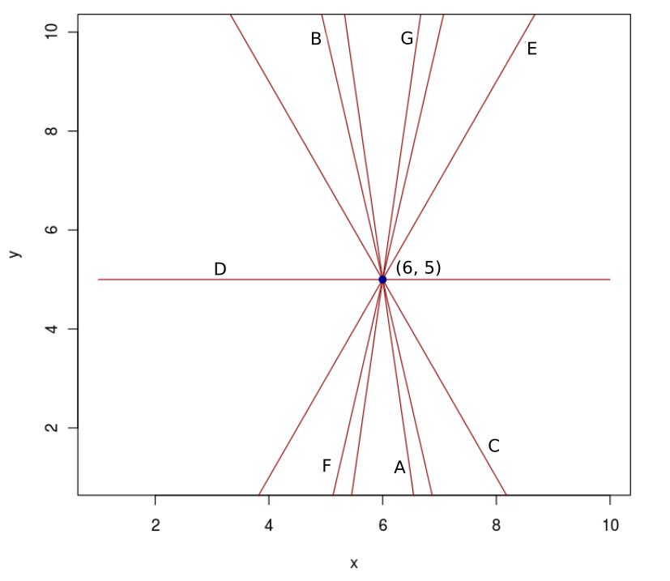

Processamento de Imagens em Ruby
Fundamentos
Imagens Digitais
São definidas por uma função bidimensional de intensidade da luz $f(x, y)$, onde:
- $(x, y)$ denotam as coordenadas espaciais
- o valor de $f$ em qualquer ponto $(x, y)$ é proporcional ao brilho da imagem naquele ponto
Os pontos de uma imagem são denominados pixels.
Convenção dos eixos para representação de imagens digitais

Propriedades:
- Largura: 640px
- Altura: 480px
- Exemplo: $f(366, 188) = 248$
Fatores que afetam a qualidade da imagem
- Quantização
- Resolução espacial
Quantização - número de níveis de cinza
| Precisão | Mínimo | Máximo |
|---|---|---|
| $2^{1}$ | 0 | 1 |
| $2^{2}$ | 0 | 3 |
| $2^{3}$ | 0 | 7 |
| $2^{4}$ | 0 | 15 |
| $2^{5}$ | 0 | 31 |
| $2^{6}$ | 0 | 63 |
| $2^{7}$ | 0 | 127 |
| $2^{8}$ | 0 | 255 |


Resolução Espacial
Imagens Coloridas
- RGB é o formato mais comum
-
Cada pixel possui 3 valores, um para cada canal
- Exemplo: $f(x, y) = [255, 50, 33]$
-
Outros formatos:
- YCbCr
- HSV
Exemplo de uma matriz RGB

Processamento de Imagens Digitais
São operações realizadas em imagens digitais.
Áreas de aplicação
- Facilitar a interpretação de imagens por pessoas
- Permitir o armazenamento, transmissão e representação de informação visual para percepção por máquinas
Primeiras aplicações

Melhoramento de imagens digitalizadas para jornais, enviadas por cabo submarino, de Londres para Nova York, no início da década de 1920.
Melhorias no Processo

No final da mesma década, em 1929, o número de níveis de cinza das imagens foram aumentados de 5 para 15.
Melhorias nos métodos de processamento para transmissão de imagens continuaram a ser feitos ao longo dos 35 anos que seguiram...

Até que a combinação do surgimento dos computadores digitais de grande porte com o programa espacial chamam a atenção para o potencial dos conceitos de processamento de imagem.
Exemplos
Redução de ruído
Detecção de faces

Detecção automática de placas de veículos

Segmentação de tumores cerebrais
Passos fundamentais
Passos fundamentais
Aquisição de Imagens
- Pela utilização de um sensor de imageamento e a capacidade de digitalizar o sinal produzido pelo sensor
- Pode ser a câmera de um smartphone, por exemplo
Passos fundamentais
Pré-processamento
- Melhorar a imagem de forma a aumentar as chances de sucesso das etapas seguintes
- Aplicação de realce de contrastes, remoção de ruído, isolamento de regiões, dentre outras técnicas
Passos fundamentais
Segmentação
- Divide a imagem de entrada em partes. Por exemplo: objetos de interesse e o fundo da imagem
- A segmentação automática é uma das tarefas mais difíceis no processamento de imagens digitais
Passos fundamentais
Representação e descrição
- A representação apenas transforma os dados iniciais em uma forma adequada para processamento posterior
- A descrição procura enfatizar as características de interesse
- Exemplo: presença de buracos e concavidades em problemas de detecção de caracteres
Passos fundamentais
Reconhecimento e interpretação
- O reconhecimento é o processo que atribui um rótulo a um objeto
- A interpretação atribui um significado a um conjunto de objetos reconhecidos
- Exemplo: a identificação de caracteres, e se este conjunto corresponde ou não à placa de um veículo
Passos fundamentais
Base de conhecimento
- É a codificação do conhecimento sobre o domínio do problema
- Pode efetar qualquer módulo de processamento
- Controla a interação entre os módulos
Bibliotecas
OpenCV
- Open Source Computer Vision Library
- Desenvolvida originalmente pela Intel
- Interfaces para C, C++, Python e Java
- Wrappers para outras linguagens, como Ruby, .Net, Go
- Cross-platform (incluindo Android e iOS)
ITK
- Insight Segmentation and Registration Toolkit
- Open-source
- Desenvolvido em C++, com wrappers para outras linguagens
- Comum para segmentação de imagens médicas
- Suporte para imagens multidimensionais
ImageMagick
- Utilizada para criar, editar, compor ou converter imagens bitmap
- Tipicamente utilizada via linha de comando
-
Bindings para diversas linguagens:
- Ruby (RMagick, MiniMagick)
- Python (PythonMagick)
- Go (Go Imagick)
- Java (JMagick)
- e muitas outras
VIPS (libvips)
- Biblioteca para processamento de imagens 2D
- Baixo consumo de memória e rápida, especialmente em máquinas com mais de uma CPU
- Thread-safe (operações em imagens geram novas imagens)
- APIs para C e C++, com bindings para Python, Ruby, PHP, GO, Lua e linha de comando
Ruby-Vips
Utilizaremos o binding para Ruby da libvips.
Carregando uma Imagem
require 'vips'
# A partir de um arquivo
image = Vips::Image.new_from_file('my_image.png')
# A partir de um array
image = Vips::Image.new_from_array([[50.0, 60.0, 70.0],
[100.0, 150.0, 190.0],
[200.0, 220.0, 255.0]])
Propriedades da Imagem
image.filename # ./samples/my_image.jpg
image.size # [512, 512]
image.width # 512
image.height # 512
image.bands # 3
image.interpretation # #<Vips::Interpretation srgb>
image.format # #<Vips::BandFormat uchar>
image.min # 0.0
image.max # 246.0
Operações básicas
# Adição
image + 10
# Subtração
image - 10
# Multiplicação
image * 0
# Divisão
image / 255
# Adição
image1 + image2
# Subtração
image1 - image2
# Multiplicação
image1 * image2
# Divisão
image1 / image2
Salvando a Imagem
# Salva a imagem em um arquivo
image.write_to_file '/tmp/my_image.png'
# Escreve a imagem em um buffer de memória
buffer = image.write_to_buffer ".jpg[Q=90]"
O Problema
Como estudo de caso, iremos desenvolver uma solução para detecção de retas em imagens.
Quantas retas possui esta imagem?

E esta outra?
Motivação
Identificar formas em imagens pode nos ajudar na detecção de objetos de interesse.
Passos para o processamento
- Aquisição: uma imagem digital qualquer fornecida
- Pré-processamento
- Converter a imagem para níveis de cinza
- Evidenciar bordas
- Thresholding
- Segmentação: Detectar retas na imagem
- Representação: Parâmetros das retas encontradas
- Interpretação: Estamos interessados em todas as retas encontradas?
- Resultado: Retas desenhadas na imagem original
Pré-Processamento
Conversão para níveis de cinza
module Vips
class Image
# Converts the image to greyscale.
#
# @return [Vips::Image] greyscale image
def to_greyscale
if format == :uchar
colourspace(:b_w)[0] # 8-bit source
else
colourspace(:grey16)[0]
end
end
end
end
Evidenciar bordas
- Existem alguns algoritmos para tratar esse problema. Alguns conhecidos são o Canny edge detector e o Sobel operator
- Nesta apresentação, utilizaremos o Gradiente Morfológico
Para entendermos o Gradiente Morfológico, precisamos antes de alguns conceitos sobre Morfologia Matemática.
Morfologia Matemática
- MM é uma teoria e técnica para a análise e processamento de estruturas geométricas
- Utiliza conceitos da álgebra (teoria dos conjuntos, reticulados completos) e geometria (translação, distância e convexidade)
- Os operadores morfológicos básicos são: dilatação e erosão
Dilatação
- Conhecida como uma operação de crescimento, expansão ou preenchimento de regiões
- Inicialmente somente em imagens binárias, com adaptações posteriores para imagens em níveis de cinza
- Algumas características:
- Tamanho dos objetos são aumentados
- Pequenos buracos são eliminados
- Número de componentes pode diminuir
A Dilatação recebe como parâmetros uma imagem de entrada e um elemento estruturante.
Elemento Estruturante
- Pode possuir qualquer forma ou tamanho, mas geralmente são utilizados quadrados ou círculos
- Também é definido um ponto de ancoragem, geralmente no centro
Algoritmo
- Utilizamos um elemento estruturante $E$ para percorrer a imagem, posicionando o ponto de ancoragem sobre cada pixel da imagem de entrada
- Substituímos o valor deste pixel pelo valor do maior pixel contido na região coberta por $E$
Imagem Original
Elemento Estruturante
Ponto de ancoragem no primeiro pixel da imagem
Ponto de ancoragem no pixel $[1, 1]$
Resultado da dilatação
Dilatação no Ruby-Vips
Somente para imagens binárias
Dilatação para imagens em níveis de cinza
Implementação utilizando Rank Filter
# Dilation on greyscale images, implemented
# as maximum filter.
#
# @param image [Vips::Image] greyscale image
# @param size_w [Integer] the width of the window
# @param size_h [Integer] the height of the window
#
# @return [Vips::Image] dilated image
def dilate(image, size_w = 3, size_h = size_w)
image.rank(size_w, size_h, size_w * size_h - 1)
end
Erosão
- Ao contrário da dilatação, a Erosão é uma operação que diminui o tamanho dos objetos presentes na imagem.
- Outras características:
- Objetos menores que o elemento estruturante são eliminados
- Número de componentes pode aumentar
Algoritmo
- Utilizamos um elemento estruturante $E$ para percorrer a imagem, posicionando o ponto de ancoragem sobre cada pixel da imagem de entrada
- Substituímos o valor deste pixel pelo valor do menor pixel contido na região coberta por $E$
Imagem Original
Elemento Estruturante
Ponto de ancoragem no primeiro pixel da imagem
Ponto de ancoragem no pixel $[1, 1]$
Ponto de ancoragem no pixel $[2, 2]$
Resultado da erosão
Erosão no Ruby-Vips
Também somente para imagens binárias
Erosão para imagens em níveis de cinza
Implementação utilizando Rank Filter
# Erode on greyscale images, implemented as minimum filter.
#
# @param image [Vips::Image] greyscale image
# @param size_w [Integer] the width of the window
# @param size_h [Integer] the height of the window
#
# @return [Vips::Image] eroded image
def erode(image, size_w = 3, size_h = size_w)
image.rank(size_w, size_h, 0)
end
Gradiente Morfológico
- Operador utilizado para realçar as diferenças de intensidade de pixels em uma dada vizinhança
- Trata-se da diferença entre a dilatação e a erosão de uma imagem
Implementação do Gradiente Morfológico
# Morphological gradient.
#
# @param image [Vips::Image] greyscale image
# @param size_w [Integer] the width of the window
# @param size_h [Integer] the height of the window
#
# @return [Vips::Image] the morphological gradient
def gradient(image, size_w = 3, size_h = size_w)
dilate(image, size_w, size_h)
.subtract(erode(image, size_w, size_h))
end
Imagem Original
Dilatação
Erosão
Gradiente
A aplicação do gradiente morfológico em imagens em níveis de cinza pode gerar alguns ruídos. Podemos eliminá-los utilizando um Threshold Simples.
Thresholding
- Definimos um limiar, de acordo com algumas características da imagem. Exemplo: 50% do valor do pixel de maior intensidade
- Pixels acima do limiar são convertidos para branco (1 ou 255, dependendo da precisão)
- Pixels abaixo do limiar são convertidos para preto (0)
- O resultado é uma imagem binária
Thresholding no Ruby-Vips
# Definindo o valor do limiar
limiar = image.max / 2
# Threshold simples
threshold_img = image > limiar
Imagem Original
Threshold ($max / 5$)
Gradiente Morfológico
Threshold ($max / 5$)
Detecção de Retas em Imagens
Transformada de Hough
- Técnica utilizada para encontrar linhas em imagens
- Pode ser generalizada para encontrar outras formas geométricas, como círculos e elípses
Para apresentar a Transformada de Hough, é preciso definir o conceito de espaço parametrizado.
Dada a equação da reta:
temos x-y como sistema de coordenadas do plano da imagem.
Plano da Imagem
A equação da reta pode ser reescrita da seguinte forma:
tendo assim um novo sistema de coordenadas a-b.
O sistema de coordenadas a-b representa o espaço parametrizado.
Plano da Imagem
Espaço Parametrizado
Vamos agora considerar um conjunto de retas que passa pelo ponto $(6, 5)$ no plano da imagem.
Plano da Imagem
Espaço Parametrizado
Podemos representar todas as retas que passam por um ponto no Plano da Imagem por apenas uma reta no Espaço Parametrizado.
Agora, vamos considerar dois pontos no Plano da Imagem. Esses pontos são: $(4, 5)$ e $(8, 6)$.
Plano da Imagem
Espaço Parametrizado
A intersecção de retas no espaço parametrizado nos dá os parâmetros das retas que passam pelos pontos do plano da imagem.
Plano da Imagem
Algoritmo
- Inicializar uma matriz acumuladora com todos os valores zerados (essa matriz representa o espaço parametrizado)
- Para cada pixel diferente de zero da imagem:
- Registrar sua reta correspondente no espaço parametrizado, somando $+1$ na matriz acumuladora, nos pontos em que a reta passa
- Os pontos de maior intensidade na matriz acumuladora indicam os parâmetros das retas encontradas na imagem
Mas...
Existe um problema computacional relacionado ao registro de intersecções na matriz acumuladora.
Como registar a intersecção de retas paralelas ou que se encontram próximas ao infinito?
Representação normal da reta
Podemos utilizar coordenadas polares para a representação de retas:
Espaço parametrizado
- Os parâmetros $a$-$b$, da representação anterior, são então substituídos pelos parâmetros $\theta$ e $\rho$
- Todas as retas que passam por um ponto no plano da imagem, passam a ser representados por uma senoide no espaço parametrizado
Plano da Imagem
Espaço Parametrizado
Plano da Imagem
Espaço Parametrizado
A implementação da transformada de Hough para detecção de retas pode ser encontrada em:
https://github.com/luisrpp/image_processing